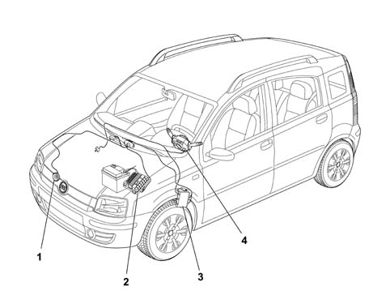
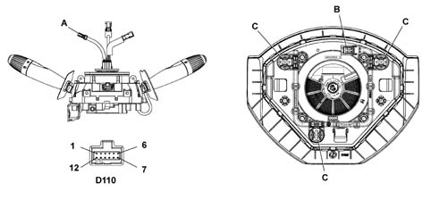

5550B horns
- Path
- Descriptions > 55 ELECTRICAL EQUIPMENT > 5550 MANOEUVRING AND WARNING SIGNALS > 5550B horns
- Kind
- system description
- Applies to
- all engines; all production periods
- Interactive page
- https://sloeber94.github.io/elrnDB-fPnd/en/#/2750967
Applies to: all engines; all production periods
The diagram below shows a view of the assembly.

1 - Horn 2 - Engine wiring box 3 - Facia Node 4 - Stalk unit
Applies to: all engines; all production periods
The electromagnetic horn is secured to a steel bracket and positioned in the central upper part of the vehicle behind the front grille.
The activation signal is given by pressing the centre section of the steering wheel by the spokes.
Applies to: all engines; all production periods
View of horn assembly
1 - Bracket 2 - Horn 3 - Connector
Applies to: all engines; all production periods
The specifications of the electromagnetic horn are as follows:
- rated voltage: 13V
- current uptake: <= 6 A
- sound level: 110 - 118 dB/A
- frequency: 420 ± 40 Hz.
Applies to: all engines; all production periods
When pressure is exercised on the covering in the middle of the steering wheel, one of the three springs in the rear of the air bag module is pressed and the circuit is closed to earth.
View of horn control circuit

A - Horn connection on clockspring B - Horn connection on airbag module C - Spring D110 - Connection on clockspring D110 - pin 7: Horn earth D110 - pin 8: Horn
Applies to: all engines; all production periods
The three springs form part of a printed circuit, located on the lower airbag module partition which ends with a two-way connection.
The connection to the system, via the clock spring, allows the rotation of the steering wheel, ensuring the correct transmission of the various signals, without the aid of sliding contacts.